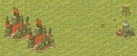
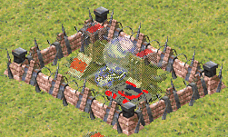
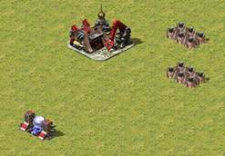
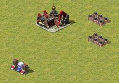
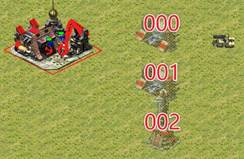
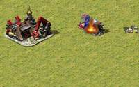
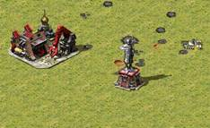
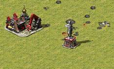
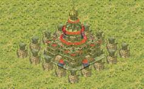
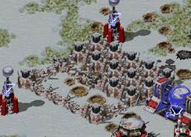

基地节点指南1.1
基地节点这个东西嘛……至少我自己是从刚学做任务时就开始用，但十年以来都是马马虎虎的使用，从未深究过里面的细节。最近终于有了点想法，想要把自己已经知道的各种特性进行系统的整理，出一份比较完善的教程。
以前应该是从来没有过基地节点方面的教程，因此我只能和tslza一起，以大量测试为基础，在不断的摸索与碰壁之中，试图将单人任务中AI作战方造建筑的逻辑整理完全。希望我们的努力能帮到更多人吧。
——竹蜻蜓（主笔），2021.1.28
目录
0 - 基地节点是什么
1 - 基地节点的建造条件
2 - 基地节点的建造顺序
3 - 基地节点的自动移位
4 - 自动建设基地模式
5 - 基地节点的插队
6 - 建筑的生产与摆放
7 - 战术延伸
8 - 局限与滥用
附录：基地节点存储结构解析
附录：与基地节点有关的触发与ini整理
总结图
策划：竹蜻蜓，tslza
审核：prry，轻稚，妖妖酱，蜜蜂狼牛
0 - 基地节点是什么
基地节点（Base
Node），顾名思义，是基地建筑建设的“节点”。一般来说，它决定了单人任务中AI作战方要在某个特定的位置，建造某座特定的建筑。在地图编辑器FinalAlert中，基地节点被显示为建筑的虚影，表示“应该在这个位置，建造这样的一座建筑”。

正常放置的建筑（左上）与基地节点“建筑的虚影”——基地节点（右下）
一个基地节点有且只有四个属性：所属方，序号，位置坐标，建筑类型。在FinalAlert的绘图窗口上，你可以直观的看到所属方的颜色、建筑类型和位置坐标，但序号是一个隐藏的属性。
在FinalAlert中，我们使用左侧树状图中的“基地节点”（Base nodes）一栏的三个工具来编辑基地节点：
l “建立节点不删除建筑”工具（Create node/Keep
Building）：使用该工具点击一座建筑物，会在该建筑物的位置产生一个基地节点，其建筑类型、所属方、位置坐标均与原建筑一致，并追加一个新的序号。
l “建立节点删除建筑”工具（Create node/Delete
Building）：使用该工具点击一座建筑物，会删除该建筑并产生一个基地节点，其建筑类型、所属方、位置坐标均与原建筑一致，并追加一个新的序号。
l “删除节点”工具（Delete node）：
使用该工具点击一个基地节点，会删除该基地节点。序号会前移补位。注意，使用树状图最底端的“删除对象”工具（Delete Object）是无法删除基地节点的。
由此我们也可以看到，在FinalAlert中，基地节点无法直接进行移动位置、更改建筑类型、更改所属方、更改序号的操作，只能通过删除，然后重新摆放建筑的方式来重新建立。在更改地图尺寸的时候，由于坐标系统发生了变化，基地节点的位置也会发生漂移——那么就需要删除它们，并重新摆放了。
1 - 基地节点的建造条件
关于基地节点建造的条件，用三个字就可以简短有力的描述：“无条件”。一旦设置了基地节点，那么AI作战方会无条件的尝试按照节点来建造——无视任何科技限制、延伸距离限制、建造数量限制，甚至在这个建筑根本不能造的情况下，把它给造出来！
接下来笔者会用一个例子来展示这个“无条件”有多么暴力（左侧图片为在FinalAlert中的摆位，右侧图片为在实际游戏中经过足够长时间以后的最终效果）：
 
无视建造距离限制：不论多远，只要是平地就能造；
无视科技限制：跳过所有前置科技，直接造出工业工厂；
无视建造数量限制：能造出2个甚至更多工业工厂；
无视这个建筑能不能造：直接造出科技钻油井、油桶、水塔等
（由于这几种正常情况下不可造的建筑没有建造动画，
AI作战方会以“直接凭空出现”的方式把它们造出来。）；
AI作战方：我要造建筑！我要造建筑！！我要造建筑！！！没有人能拦着老子造建筑！！！！
事实上，一般只有两件事情能够拦住它：没建造厂，和没钱。钱在原版平台是一件用触发不太好控制的东西。所以，想要阻止AI作战方按照基地节点建造，操作性最强的办法还是拿掉它的建造厂。（另外，对于耗电建筑的基地节点，需要保证AI作战方电力充足，才能较为直接的建造出来。有关这部分的详细讨论，我们会在第5章进行。）
触发结果3 [生产开始] 与基地节点的建造有一点点关系：如果作战方的IQ值低于 [IQ] →
Production=
（原版为5），那么，不执行触发结果3 [生产开始]
，AI作战方就不会自动开始按照基地节点建造建筑物。但如果作战方的IQ值高于或等于[IQ] → Production=
，那么即使没有执行这个触发结果，AI作战方仍然会开始建造。
另外触发结果30 [自动建设基地] 对应的逻辑略微复杂一些，我们会在第4章进行讨论。
一般来说，AI作战方只会在一种情况下认为这个基地节点已经建立成功了：在基地节点的位置上，恰好有一座与之同种类的建筑。这座同种类的建筑可以是任何来源的：可能是自己按照基地节点造出来的，也可能是触发结果125
[将建筑建于...]
造出来的，也可能是地图上早就摆好的，或者甚至是AI作战方拿工程师占来的……都不影响AI作战方认为基地节点建立成功。（不过在第3章我们会介绍此条件的一个反例。）
基地节点与对应建筑的位置必须是完全对齐，有一点偏移都不行，否则不会判定为成功，甚至会把该建筑当作障碍，形成阻挡状态。
2 - 基地节点的建造顺序
基地节点的建造顺序与它的隐藏属性——序号密切相关。我们先聊聊序号的特性。
首先，基地节点的序号是一个3位数字（缺位用0补齐），从“000”开始由小到大排布；其次，基地节点的序号是按照所属方来存储的，每一个所属方都有着从“000”开始的、自己独享的一套序号。当然，这些性质在FinalAlert中都难以直观的看到，所以你也不必去特别的记忆。
真正需要注意的是，FinalAlert中的三个基地节点编辑工具，“建立节点删除建筑”、“建立节点不删除建筑”只能在末尾追加新的序号，而“删除节点”在删除以后会让序号依次前移补位，这意味着在完全使用FinalAlert编辑基地节点时，同一个作战方的基地节点，一定是越后建立的，序号越大。因此，为了重新安排基地节点的序号，你可能不得不删除一个作战方的所有基地节点，重新进行设置。
AI作战方按照基地节点建造建筑的顺序，就是严格的按照序号由小到大而来的，没有任何的例外情况。
种种情况表明，如果某个基地节点对应的建筑造不出来，整个作战方的所有基地节点会整体进入一种阻塞的状态——虽然有建造厂，也有足够的钱，但就因为这一个基地节点造不出来，导致后续的基地节点也全都造不出来。
等等，不是无条件造吗，怎么会造不出来？这里的“造不出来”主要指的是阻挡（blockage）状态。阻挡可能是建造位置被障碍物挡住了，或者因为地形不适宜而放不下去，抑或基地节点本身在地图可视区域外，等等，总之就是EVA所说，“Cannot
Deploy Here”。
其实有一部分阻挡状态是可能可以由AI作战方自行解决的，就是基地节点的位置被AI自身或者盟友的单位堵住了的情况，这种情况被称为临时阻挡（temporary
blockage）。此时AI会尝试让附近的单位随机移动，看能不能凑巧把需要的建造空间让出来。AI作战方在这样“驱赶”附近的单位以后，会等待[General] →
PlacementDelay=
（单位：分钟，原版值为0.05，即3秒）以后再尝试下一次放置。但毕竟是随机移动，可能经历了若干次随机移动也没能空出需要的位置。但由于MaximumBuildingPlacementFailures这句代码没有发挥应有的作用（根据原版注释，这条代码本意是让这种尝试进行一定次数就终止，但经测试这条代码在单人任务中没有任何实际作用），这种临时阻挡状态可能会永远持续下去，AI作战方的建筑生产就被卡死在这里，无法执行后续动作。

临时阻挡永远持续下去的一种情形
不过这种情形算是一种很极端的状况。我们先默认临时阻挡都可以被AI自动解决，下文中提到的阻挡，都指的是另一种AI没法自主解决的状况——被敌方单位，或者被不能移动的玩意（建筑/围墙/石块/地形等）挡住，即永久阻挡（permanent
blockage）。这样的阻挡可就真的是无力回天了。此时AI作战方不会继续进行任何摆放建筑的尝试了，直接判定为建造失败。
建造失败怎么办呢？接下来，AI作战方会执行下一章所讲的步骤——自动移位。
3 - 基地节点的自动移位
我基地节点呢？我摆在这儿好好的基地节点呢？？AI还能给我移走了不成？？？
位置坐标是基地节点的属性中唯一一个可以在游戏的过程中被动态的改变的属性。上一章节我们还讨论了阻挡问题，当没被阻挡的时候，AI作战方会精确的在基地节点指示的位置造出特定的建筑，这样才算这个基地节点建造成功；但如果发生了阻挡，AI作战方在尝试原位放置无果后，有可能会把建筑放置在其它稀奇古怪的位置。本章会详细的讨论这种行为。
首先，确实是基地节点本身被移动了，而并非是AI作战方在其它地方造出了与这个基地节点相关联的建筑。这个推论基于以下事实：当我们阻挡了AI作战方的基地节点，使需要造的建筑更换位置建造，然后手动解除阻挡以后（比如把堵在那个位置的单位移走），再摧毁刚刚AI作战方造出的建筑，让它再次重建。此后AI作战方重建的建筑，即使原位置已经没有了阻挡，仍然会造到更换过以后的位置，而非最初的基地节点位置。这就充分的证明，是基地节点本身的位置被永久的移动了。
另外，基地节点被移动以后，其判定建造成功的条件出了一点小变化（在第8章局限5之中有推测其内部原理）：只有AI作战方按照这个基地节点的指示建立了建筑，这个基地节点才会被判定为建造成功。而其位置上有其它来源的对应建筑（比如说按照另一个与它重叠的基地节点而建立的，或者预先放在这里的，等等），都不会认为建造成功，甚至会被判定为发生了阻挡。
接下来我们需要先介绍“基地中心”的概念：基地中心是每一个作战方独有的一个特定的坐标位置，AI在很多方面的位置判断、距离判断都会选择以这个坐标为中心。比如，从工厂生产出来的无指令单位都会先在这个坐标附近待命，动作脚本中的“在基地附近集结”（Gather
at Base）的位置也会和这个坐标有关联。当然，今天仅讨论它在基地节点方面的用途。
基地中心默认是自动计算的，而自动计算的规则非常简单粗暴：取该作战方所有建筑的坐标平均值作为基地中心。这个位置不一定在己方的建筑附近，甚至不一定能造建筑。在单人任务中，AI作战方的势力分布是相当复杂的：有可能整张地图上都有它的防御建筑，但实际上基地的核心生产建筑只集中在一个角落区域；或者，AI作战方的势力分布在两大块，把一片水域夹在中间，等等……总之，除非你把基地摆成均匀的一坨，否则自动计算的基地中心都很有可能落到古怪的位置上。这时，我们就需要手动干涉基地中心的位置，告诉AI作战方“自己基地的主要部分在哪里”，这是非常必要的。
如何干涉呢？基地中心的坐标是可以用触发强行设置的。触发结果*137
[基地中心单元设置]*
可以把某个作战方的基地中心强行的设置到某个路径点的位置，而对应的，触发结果138
[基地中心单元清除]
可以取消触发设置的基地中心位置，返回自动计算的状态（然而几乎不会用到，一般任务中哪有让AI举家搬迁的？）。这使得我们可以手动设置基地中心的位置了。
刚刚说了这么多，那么在基地节点方面，基地中心的意义就在于：某个基地节点被阻挡以后，
AI作战方会把该基地节点移动到基地中心位置上。（无视基地中心是否真的能建造建筑，也无视基地中心有无其它的基地节点，只会不偏不倚的恰好落在这个坐标上）
接下来笔者会用一个例子展示这种机制形成的阻挡和阻塞现象。左图中，基地中心被触发强制设置在了左下角的98号路径点，而图上放置了3个磁能反应炉基地节点+1个作战实验室基地节点，共4个基地节点。其中基地节点000、001被围墙阻挡，002、003没有被阻挡。AI作战方金钱充足，IQ为5足够。
 

在右图展示的实际建设情况中，AI作战方会首先尝试建造000号基地节点。发现阻挡以后，AI会直接把000号基地节点移动到基地中心（即98号路径点位置）。此时基地中心没有被阻挡，于是AI作战方顺利的在此造出一座磁能反应炉，基地节点000号建造成功。
然后轮到了001号基地节点：由于001号基地节点也被围墙阻挡了，AI会在尝试建造失败以后，把001号基地节点也移到基地中心上。但此处已经有一座造好的磁能反应炉了。由于被移动的节点只有AI作战方按照它建立建筑时才判定成功，因此001号节点被000号节点造出的磁能反应炉所阻挡，建造失败。
至于002和003？由于001建造失败，基地节点的建造在这里被阻塞了，根本轮不到002和003去建造。于是，在这个例子中，AI有4个基地节点，但只会造出000号对应的一个磁能反应炉然后卡死。
按照这种逻辑，被阻挡的基地节点，在反复尝试失败以后，都应该被移动到了到了基地中心，相互重叠，导致只能在基地中心造出一个建筑，然后形成阻塞，最后AI被卡到无法生产任何建筑。
可是有时也有人会看到，在这样设置下的AI，在被阻挡的情况下，仍然可能会造出多个建筑，这是为什么呢？因为自动计算得到的基地中心并不是静态的，而是随着地图上建筑的变化，这个坐标平均值也会不断的更新。尤其，在玩家摧毁敌人一大片建筑时，这个平均坐标就会受到显著影响，发生可观的变化，从而导致有一些基地节点被凑巧移动到了能造出来的位置（典型的现象是造出许多占地1×1的防御塔）。是基地中心在变，才导致基地节点被自动移位的位置变化的！（当然如果你使用触发锁定了基地中心位置，那就真的最多只能造出一个建筑了）
但是这种移动只能说是“凑巧”
——它仍然非常的死板，而且一般造不出多少建筑，不足以让AI作战方恢复完整的科技和生产能力。而且最后把自己卡到无法生产任何建筑的结果，使其行为更像是一种“主动求死”而不是“垂死挣扎”（把基地中心锁在己方建造厂上形成永久阻挡，死也不把生产建筑留给玩家占领，等玩家工程师过来再把建造厂卖了）。有时我们需要更加灵活的基地节点建造方式，这就要靠在下一章我们介绍的内容了。
4 - 自动建设基地模式
上一章说到，AI作战方在基地节点受到阻挡时，其重新选择位置的方式非常死板，几乎一定会卡死自己。但大家也应该知道，遭遇战AI在建筑被卡位的时候，却没有这样的表现。看来我们需要向遭遇战取取经，研究一下遭遇战所使用的自动建设基地模式。
触发结果30 [自动建设基地]
是这个模式的开关，单人任务中，它默认是关着的，而遭遇战中默认是打开的。那么，如果在单人任务中启用它，AI就会像遭遇战中那样自动生产建筑吗？
测试结果是，在地图上没有任何该作战方的基地节点时，确实是如此的，AI作战方真的会像遭遇战中一样自动的生产建筑；但一旦地图上有了已经摆好的基地节点，哪怕只有1个，AI都会严格的按照基地节点来进行生产，同时，在发生阻挡的时候，AI建造建筑的行为也发生了细微的变化……
表象1：AI作战方有建造厂，地图上已经有手工放置的基地节点时，打开自动建设基地模式，AI作战方会按照建造基地节点的指示建造建筑，不会多造。并且，在建造位置被阻挡以后，它们会在建造厂附近以类似遭遇战的摆位造出来，数量上是完全对应的。
表象2：AI作战方原本有建造厂，地图上原本没有手工放置的基地节点，打开自动建设基地模式。摧毁AI作战方的建造厂，并在另一个位置重新给它一辆基地车并展开，此时AI会在之前被摧毁的那座建造厂位置，凭空再造出一个建造厂。（想想为什么？）
种种迹象表明，自动建设基地模式和基地节点有着非常紧密的联系。其实，自动建设基地模式有以下两个功能：
功能1：在AI作战方没有基地节点时，自动产生一系列基地节点（如果地图上已经有了该作战方的基地节点，则不会产生）。产生的000号基地节点一定是本阵营建造厂，且和地图上已有的建造厂位置重叠，往后则按照科技树进行产生（在rules的[AI]章节有若干条代码控制各类基地节点生成的数量和概率）。
功能2：把基地节点被阻挡时进行移位的移动规则，从“移动到基地中心那一点”改为“移动到建造厂附近的空地上（并且排布符合[AI]
→ AIBaseSpacing=
、[BuildingType] → WantsExtraSpace=<yes/no>等代码的指示）”。
对于遭遇战AI，功能1决定了出建筑的种类和数量，而功能2决定了出建筑的位置。在单人任务中，功能1我们基本用不到，但功能2却极为实用，因为它可以有效的防止AI作战方的建筑生产线因为基地节点被阻挡而被卡死。换句话说，如果你使用了基地节点，还想让AI作战方在基地节点被阻挡的时候，聪明的更换位置建造，那请无脑打开该作战方的自动建设基地模式。
注意1：自动建设基地模式下的基地节点移位规则变为“移动到建造厂附近的空地上”不可以理解为“基地中心在移动”。此时基地中心的位置仍然遵循着第3章所讲的规则而确定，并在其它方面（比如单位的集结地点）保留着自己的影响。
注意2：自动建设基地模式下，请尽量确保建造厂在地图内。如果建造厂不在地图内，AI作战方会从ID最高的建筑物开始延伸建筑，但是延伸的方式很奇怪：只会向一个特定的方向直线排开。这种情况姑且认为是游戏产生了bug，也很难加以利用。
注意3：在单人任务中，自动建设基地模式一经打开，其影响就会一直产生，可以理解为“关不掉了”。但是，我们可以通过反复重新“打开”，来刷新AI作战方所判定的建造厂位置。
在任务之中，我们还会遇到一些AI作战方从一辆基地车开始白手起家建造基地的情形（有时甚至基地车的部署位置都不确定）。在这种情况下，是不是不得不使用自动建设基地模式的功能1呢？可以设想，这样做最大的缺陷有几个：
缺陷1：不好控制出同种建筑物的数量，比如说需要AI出3门巨炮（原版平台会因为这个很头疼，虽然在Ares下这并不是问题）。
缺陷2：为了限制AI不去建造某些建筑，可能需要修改一堆建筑的ini（AIBuildThis=no），一点点的封掉相关科技。
缺陷3：由于自动建设基地生成的第一个基地节点一定是建造厂，在基地中心没有对准的状态下，AI可能会凭空造出另一个建造厂（即刚才提到的表象2。这是个致命问题，在AI基地部署位置不确定时很常见）。
缺陷4：尤里的AI会自动生成奴隶矿场的基地节点，导致不停的补奴隶矿场。（在原版平台的单人任务模式，收成车辆状态的奴隶矿场不会被计入建筑总数。这是一个bug）
但既然基地部署位置不确定，我们还需要AI自动的进行建筑布局，不需要我们事先把所有基地节点位置摆好。此时，我们可以利用基地节点移位的性质，制作一个伪·遭遇战自动建设基地模式。
方法很简单：打开自动建设基地模式，手工提前放好基地节点（避开功能1），但是让所有的基地节点都被阻挡——比如，把所有基地节点都放在地图的可视区域外。AI会按照这些基地节点的序号，逐个的建造建筑，不多也不少，但AI在建造之前，会自动的把这些基地节点移动到建造厂附近的位置。这相当于，手动控制建造的建筑种类与顺序，但让AI自动选择位置。
总结一下3、4章的内容，用最精简的语言概括一下，大概有这么两条：
基地中心**的计算规则：一般是所有建筑的坐标平均。也可用触发锁死其位置。**
基地节点被阻挡以后的自动移位规则：如果开启了自动建设基地模式，则移动到建造厂附近的空地；如果没开，则移动到基地中心那个点上。
5 - 基地节点的插队
本章所探讨的现象，要从AI作战方电力不足时的保护机制说起。前文的所有讨论都是在“AI作战方电力充足”或者“生产的就是电厂”的状态下进行的，但电力不足的时候尝试生产耗电建筑会怎样呢？
只有当AI作战方电力不足，且下一个基地节点需要它生产耗电建筑时（生产电厂或者不耗电建筑<如机枪碉堡等>则不受限制），AI作战方会表现出一种“试图先恢复电力”的行为：在耗电建筑的基地节点序号之前，先插入一个本阵营基础电厂的基地节点，而后面的基地节点的序号会依次向后移动。这形成的表象就是，AI作战方在生产这个建筑之前，要先补另一个建筑，因此称这种行为为插队。
“电力不足”有什么判定的细节吗？
只有保证建造完下一个耗电建筑以后，富余电力大于0（注意不含等于），AI作战方才会认为此时电力是充足的。也就是说，电力刚刚好足够的状况，AI作战方还是会尝试多补一个电厂。如果预测到在建造下一个建筑物以后电力会不足，此时AI作战方也会开始让电厂插队。另外，如果当前的电力不足状态是来自飞碟吸住电厂或者间谍断电这类强制断电方式，AI作战方不会判断“假如没有人给我强制断电，我的电力是否充足”，而是跳过电力相关的判断，不再让电厂插队，转而去直接生产后续的建筑物。
这个新生成的电厂基地节点，位置是在哪里呢？答案是“就像它被阻挡了一样”：如果没有开启自动建设基地模式，那么这个节点就会生成在基地中心；如果开启了自动建设基地模式，则会生成在建造厂附近。
在电厂插队以后，如果没有开启自动建设基地模式，而基地中心又被阻挡了，AI作战方的建筑生产就因为这个插队的电厂基地节点被阻挡，而导致其它建筑的生产被阻塞了，可以称其为电力阻塞。其表象就是：“为什么我的AI停电以后，就不按照基地节点补建筑了？”这也造成了部分教程误认为基地节点的生产需要电力充足的原因。
我们无法禁用这种插队机制，只能选择去规避。为此，我们需要保证AI作战方的电力尽量自给自足；或者科学的安排基地节点的顺序，把电厂的基地节点排在前面；或者索性把自动建设基地模式打开，避免因阻挡造成的阻塞。
电厂插队只是较为明显的一种插队机制，但应该还有其余的插队机制。有一种观点认为，遭遇战AI生产防御建筑的过程也有插队机制的一份功劳。由于本教程仅讨论单人任务，这里就不做深入的讨论了。
6 - 建筑的生产与摆放
之前的章节都在讨论“AI作战方在没有干扰的情况下，经过足够长的时间以后，会把建筑造成什么样子”，都没有考虑建造过程中各个时段动态的干扰。在本章中，我们来重点讨论它。
在第2章提到，AI会按照基地节点的序号由小到大生产建筑，没有任何的例外情况。在没有被打扰的情况下，这件事情的正确性能够得到轻易的验证。然而，在实际游戏中，可能会出现AI作战方刚建造完一个建筑，玩家就把它摧毁了的状况。此时AI的生产顺序就有可能变得奇怪，就像遭遇战AI有时候能够跳过电厂直接生产矿厂，让玩家大呼AI作弊。
种种迹象表明，AI作战方建筑物的生产和摆放是不同的两个过程：前者好比玩家在建造栏中点下一个建筑物，后者好比玩家从建造栏中把已经就绪了的建筑物放到地图上。虽然一个建筑的生产往后几乎必定伴随着摆放，而且二者都遵循基地节点序号从小到大的原则，但二者之间判定的时间差却容易搞出一点意料之外的事情。笔者会用两个例子展示这种现象：
在第1个例子中，我们只关注000号磁能反应炉与001号磁能反应炉节点。



一座磁能反应炉的正常建造时间约23秒。在游戏开始23秒以后，000号节点对应的磁能反应炉被成功建造出来。我们立即使用坦克将其摧毁。于是，在又过了23秒以后，又一座磁能反应炉被造在了000号节点的位置；然后再过23秒，下一座磁能反应炉被造在了001号节点的位置。
第2个例子中，我们让001和002号节点的顺序变化一下，这次001为兵营节点：
 

这次我们同样让000号节点的磁能反应炉建造出来以后被立刻摧毁。但这次，建造的顺序却发生了变化：接下来是19秒（兵营的正常建造时间）以后首先建造出了001号节点的兵营。这违背了“建造顺序一定是按照序号”吗？
仔细想想也没有。第2个例子中，AI作战方在放下000号节点的磁能反应炉以后，显然是毫不犹豫的开始生产001号节点的兵营，才赶上了19秒的时间。只是在兵营放下的时候，地图上的建筑状况已经发生了变化，才导致这种看起来违背顺序的状态发生。
那么第1个例子为什么又去补000号节点的磁能反应炉呢？看起来只有一种解释，就是：AI作战方实际上是因为要建造001号节点的磁能反应炉，才开始生产一座磁能反应炉的；但是在生产完成准备摆放的时候，由于000号节点没有完成，而且恰好这里需要一座磁能反应炉，因此刚生产好的这座磁能反应炉被摆放到了000号位置。这也符合第二个建造的磁能反应炉耗时是23秒的事实。AI作战方并没有因为地图上的建筑发生了变化，而变动自己正在生产的建筑。
复杂情况下，我们可以认为AI作战方的生产与摆放遵循如下原则：
生产：寻找序号最小的、未建立成功的基地节点，生产它对应的建筑。
摆放：根据已经生产好的建筑，尝试把它摆放到序号最小的同类型的基地节点上。
在生产与摆放过程之间，没有其它判定。
我们注意到这两个过程都遵循“序号最小”。这样看来，仍然是没有例外呢。
我们可以很容易的发现，阻挡的判定是在摆放那一瞬间才发生的。如果发生了阻挡，紧接下来的事情就是基地节点移位——基地节点被移位以后，待建造建筑的生产进度会从零开始重新计算（就好比，玩家把已经就绪了的建筑取消生产，再重新点下去）。通常，这样会导致耗费2倍的生产时间。
我们前面所提到的阻塞状态，其实就是AI作战方的基地中心被阻挡，一个基地节点每次移位的时候都会被阻挡（虽然坐标没变，但也是“尝试移动”过了嘛），而每次移位都会重置生产进度，所以就一直在反复生产这一个建筑，但就是放置不下去。
但是，当由序号更小的基地节点对应的建筑被摧毁的话，AI作战方就会在下一次移位以后，检查到更小的序号的基地节点没有建造成功，转而去生产更小序号基地节点对应的建筑。但是这不意味着阻塞解除了，因为比阻塞位置更高序号的基地节点可能永远也不会有机会生产了。如果000号基地节点被阻塞，那可就真的彻底无力回天了。
7 - 战术延伸
基地节点只有“重建基地”一种用途吗？本章我们会描述一种基地节点在单人任务中的活用方式：战术延伸。
有时候我们需要AI作战方在特定的时候（通常由触发来控制）在某个地点生产一系列建筑。如果需要一瞬间把所有建筑生产完成，我们通常会使用触发结果125
[将建筑建于...]
来制作。但有的时候，我们就是需要AI作战方做出一点一点延伸建筑的行为：或是在一个区域逐步建立起防御，或是慢慢的把电厂和巨炮摆到玩家的家门口（如果直接在玩家的基地里面造巨炮是不是太作弊了XD）……这个时候，我们就需要基地节点来帮忙了。
同一个AI作战方是一定会尝试无条件生产全部基地节点的，既然有生产能力，自己基地中使用基地节点来补建筑是不能断的。那么我们如何控制一部分基地节点在特定时候才启用呢？那当然是使用障眼法，使用同颜色的不同AI作战方，假装是同一个作战方就行了。
我们来看一个实际制作的例子（取自尤里复仇原版任务，盟军07-脑死）：

我们在游戏中看到的表象是，紫色的AI作战方会尝试去占领位于地图左下角的2个油井。如果占领成功，就会在其附近建造一系列的防御建筑、兵营与战车工厂，并出兵进行防御。油井丢失的时候，AI作战方也会放弃这块阵地。
用FinalAlert打开一看，地图边界外，放置着这个作战方的建造厂呢。原来是不同的作战方，只是颜色相同罢了。
战术延伸一般有以下步骤：
准备：准备一个同颜色的AI作战方，在地图边界外为它放置建造厂和适宜的电力。设置其IQ=4，或者采用“先把建造厂调成其它所属”等手段，使其先不开始生产。
启动与执行：在合适的时机，使用触发让这个AI作战方开始生产，后面的动作就由它自行完成了。这个同颜色的AI作战方会在地图内按照它自己的基地节点建造一系列建筑。
放弃：或是没有达成某种目标，或是经历了一段时间，总之就是需要结束这种自动补充建筑的状态（由于建造厂实际上并不在地图上，让玩家来亲自摧毁几乎是不可能的了）。可以使用触发直接摧毁它的建造厂，或者让其变卖全部建筑来结束这次战术延伸。
由于建造厂在地图边界以外，我们难以使用自动建设基地来进行布局，因此这种方式的建筑摆位一定是较为死板的，且容易被阻挡。为了让建筑队列不易阻塞，我们在摆放基地节点的时候，应该尽可能选择较少种类的建筑进行延伸——这样在后面被阻塞的建筑，是有很大可能被用来摆放到前面的基地节点上的。
以上只是介绍了战术延伸的基本思路，但还有很多细节需要处理。主要是因为我们使用了一个障眼法：“看起来是同一个AI作战方，实际上是两个相同颜色的AI作战方。”查缺补漏主要围绕这里展开，请读者在使用的时候自行完成，本教程就不赘述了。
8 - 局限与滥用
基地节点有着强大的功能，但它又有着一定的局限性。另外，如果滥用基地节点，可能会带来极差的游戏体验。本章会主要叙述这两方面的问题。
本章的内容较为零碎，主要都是一些细碎的坑点，希望大家有耐心看完。
局限1：单人任务中，基地节点生产出来的建筑，AI作战方是不会自动使用小扳手进行修理的。
NMD，WSM，凭什么遭遇战AI就会
顺便，触发结果125 [将建筑建于...]
造出来的建筑也是不会自动使用小扳手的。这两点几乎是无解的，即使解决了也有很大副作用。
局限2：如果一个AI作战方有多座建造厂，那么会产生很多种异常状态。
和AI作战方拥有多座战车工厂就会从每个战车工厂中同时生产相同的坦克一样，当AI作战方拥有多座建造厂，就会每次同时生产若干座相同的建筑。要是同类建筑有很多对应的基地节点还好，AI作战方会尝试按照生产与放置的规则，尝试逐个把已经生产完成的建筑放置在基地节点上。可是当所有同类基地节点都已建立成功，AI作战方却还有生产完的建筑没有放置的时候，AI作战方就会尝试插队生成新的基地节点，尽力把所有建筑放置下去——这通常都会造成阻塞。
而且，当某座基地节点上的建筑被摧毁时，AI尝试补建筑的时候，也是每次补好几座。经过不断的摧毁→补建筑→插队的循环以后，这种类型的基地节点可能会越来越多。当然，一般AI作战方不会真的造出一大堆同类建筑，因为在此之前早就产生阻塞了……
（不过，在Ares中，可以通过一条全局语句关闭这个多工厂生产功能，上面的问题也就不存在了。）
另外，自动建设基地模式下，如果有多座建造厂，还有一个灵魂难题：究竟该选择哪座建造厂作为基地节点移位的中心？
的测试显示，在建造厂的数量变化以后，第一次使用触发结果30 [自动建设基地] - 打开
以后，基地节点移位的中心会转移到最晚出现的一座建造厂的位置；但在此后再次或者更多次的使用触发结果30 [自动建设基地] - 打开
，基地节点移位的中心又会转移到最早出现的建造厂位置。这是一个十分迷惑的结果，而且因为多倍建造建筑的原因，在实际制作中也难以进行利用。
综上所述，应该避免在需要AI作战方生产建筑的状态下，给AI作战方多个建造厂。如果实在有在地图上摆多个建造厂的需求，可以使用若干个相互结盟的AI作战方，每个建造厂各属于一个作战方，以规避各种问题。
局限3：在FinalAlert中，无图像的建筑，其基地节点是隐形的。
当一个建筑没有图像，或者因为mix打包问题在FinalAlert中不显示图像，请尽量避免使用它的基地节点——无图像的建筑好歹有个线框，可它的基地节点就真的啥都没有，完全看不到了……对于玩家来说可能不是个问题，但这个特性可能在任务制作过程中，为制作者带来不必要的困扰。
局限4：当你用基地节点造围墙……
在地图上设置围墙的基地节点来让AI作战方自动建造围墙是可以的。遭遇战AI也会根据[BuildingType] →
ProtectWithWall=<yes/no>的设置，决定是否要在一座建筑物周围自动生成一圈围墙的基地节点。

自动生成的围墙基地节点大概是这样的
AI作战方是可以正常的判定围墙建立成功的，可是，由于围墙“自动连接”的性质，这一圈基地节点产生的实际效果就很可能十分迷惑……

AI补围墙常态
你看看你都保护了个什么玩意儿啊.jpg
还把中间要保护的建筑阻挡到换位置了
（想想为什么？提示：生产围墙但未摆放的过程中，中间建筑被毁了）
而如果只在围墙的四个角放置围墙基地节点，在围墙中间被打断一截的时候，AI作战方就不会补。
除了用于保护唯一建造厂的最后一圈围墙防线，只要它保护的建筑可能被端掉，其它地方的补围墙几乎总是不会十全十美。综上，请尽量避免使用基地节点补围墙，即使必须要使用，也应该十分谨慎。
局限5：重叠的基地节点
应该避免在地图上主动摆放重叠的基地节点，即使打开了自动建设基地模式。
基于部分测试的结果，我们推测，被阻挡的基地节点可能被临时存储在了一个特定的位置（强烈怀疑是坐标(0,0)），然后才会执行移位的。这会导致重叠的基地节点几乎总是被同时移位，但对其余情况来说表现都正常。
由于不推荐这么做，本教程也对此不做太多讨论。
滥用1：过多的基地节点。
从前面的讨论中，我们可以看出，基地节点的阻塞是一种非常容易发生的现象，而且在发生以后几乎无法补救。这一点在使用过多的基地节点时尤为明显。在一些早期的任务中，你会看到有些作者把地图上几乎所有敌方建筑都放上了基地节点，导致AI作战方在被阻挡的时候，在自己的基地中心建造一大堆的建筑，甚至可能把通行路线都堵住，造成更多后续的卡顿。
而虽然有这么多的基地节点，但因为一直在阻塞，实际上没有起到多少补充建筑的作用。这就是一种单纯降低游戏体验的滥用。
笔者认为，一个作战方的基地节点，只应被用来补充一片小区域内的建筑物，比如敌人基地的核心区域、延伸路线，或者分基地，等等。虽然理论上你可以设置相当多的基地节点，但仍然建议控制数量，不要多用。
滥用2：顺序不合理的基地节点。
关于基地节点的顺序有多重要，还要再次强调一遍。
同样是很多早期任务犯的毛病：在地图上设置基地节点的时候，就用“建立节点不删除建筑”工具瞎胡乱描一通，描到谁就是谁；然后在实际游戏中，造着造着就阻塞了……但要知道，通过按照一定原则，合理的规划基地节点的顺序，是可以尽量的规避阻塞的。
原则1：“不卡电”——尽量确保AI按基地节点建造的时候，不会电力不足，避免触发电厂插队机制，这种机制十分容易引起阻塞。
原则2：“由内而外”——靠近建造厂的建筑，基地节点的序号应当更小。这种设置是基于基地外围、离建造厂较远的建筑更加容易被玩家的阻挡的事实（一旦玩家打到建造厂面前，那么，已经可以不用再努力了.jpg）。这样设置以后，即使外围基地节点被阻塞了，仍然可以补内圈的建筑。
原则3：“内重外轻”——重要的、数量少的建筑放置在基地内部，数量多的建筑可以往基地外围放。这样可以尽量确保关键建筑较晚被阻塞。
附录：基地节点存储结构解析
基地节点被直接存储在每个作战方（House）的ini字段下，如[Russians House]。存储的格式为：
[序号]=[建筑类型],[X坐标],[Y坐标]
序号：一个3位数字（缺位用0补齐），从“000”开始由小到大排布。显然，一个作战方的基地节点最多1000个，序号从000到999（绝对足够用）。
建筑类型：建筑的注册名。
X**坐标、Y坐标：**整数，代表基地节点的位置。
除此之外，每个作战方字段下还有NodeCount=
属性与基地节点相关：NodeCount表示基地节点的总数量，一般等于基地节点的最高序号加1（因为基地节点是从000号开始的）。序号高于NodeCount减1的基地节点都不会被游戏所读取。
一般来说，我们在FinalAlert中编辑基地节点时，FinalAlert会帮我们自动维护这些参数，用不上制作者手动进行修改。
但一旦需要使用记事本打开地图修改基地节点，你就要注意以下事项，确保游戏不会出错：
注意1：基地节点的序号必须从000开始由小到大逐个排布，不能有跳跃。否则游戏会在载入阶段报错。
注意2：NodeCount的数量必须小于或等于基地节点的最高序号加1。否则游戏会在载入阶段报错。
以上两种报错的EIP均为007C9B92，在调试的时候可以留意一下。
附录：与基地节点有关的触发与ini整理
本章节整理了大部分与基地节点有关的或者“看起来好像有关”的触发和ini，并明确其作用。
实际上无关但是被收录的状况会用红色标出。
触发结果部分
3 [**生产开始]
该AI作战方开始生产建筑和单位。（开了就关不掉）
当AI作战方的IQ大于[IQ] → Production=
（原版值为5）时，即使不使用此触发，该AI作战方也会自动开始生产。若想达到“使用此触发控制AI开始生产，又不产生其它影响”的效果，可以把该AI的IQ值设为4。
30 [**自动建设基地]
开启或者关闭自动建设基地模式（不过实际上开了就关不掉）。
其余的更多细节建议阅读本教程第4章的详解。
125 [**将建筑建于...]
为该作战方在指定路径点强行建造特定的建筑物。建筑会在一瞬间建立完成。如果该作战方不是玩家，还会在其上叠加播放其建造动画。
和基地节点的建造不同，使用触发建造建筑物会使阻挡的单位被强制瞬移到附近，阻挡的覆盖物（如围墙、沙袋、矿石等）直接消失。但是在遇到地形不合适的情况，或者其它建筑物、树木等的阻挡，则会建造失败。
使用这个触发建造的建筑物因为不属于基地节点的判定，也不会移位。相比于基地节点，这种方式更适合一些单独的关键建筑物按时建造。
137 [**基地中心单元设置]
将该作战方的基地中心位置锁定到特定的路径点位置上。
138 [**基地中心单元清除]
将该作战方基地中心位置的锁定状态清除，回到自动按照所有建筑的坐标平均计算的状态。
全局ini部分
[General] → PlacementDelay=
填实数，单位为分钟。原版值为0.05，即3秒。
临时阻挡发生时，AI作战方每隔多久进行一次建造尝试（尝试驱离附近的己方和友方单位）。
[General] → AIRestrictReplaceTime=
填整数，单位为帧。原版值为400，即26.67秒。
（原版注释的解释）当AI的建筑物受损，AI会在接下来的这么长时间内只会补充电厂、防御建筑和围墙。经测试，本条代码疑似只对遭遇战生效。
[General] → AINavalYardAdjacency=
填整数，单位为格。原版值为20。
自动建设基地模式下，AI船厂节点移位时，离建造厂的最远距离。船厂相对于其它建筑有着单独的距离判定规则，不受AIBaseSpacing影响。
[General] → MaximumBuildingPlacementFailures=
填整数，单位为次。原版值为3。
（原版注释的解释）临时阻挡发生时，AI尝试在原位建造建筑的最多次数，如果超过此次数，则进行移位。经测试，本条代码在单人任务中不会生效。
[IQ] → Production=
填整数，无单位。原版值为5。
单人任务中，AI作战方的IQ大于或等于这个数值时，无需使用触发结果3 [生产开始] 也会自动开始生产。
[AI] → AIBaseSpacing=
填整数，单位为格。原版值为1。
自动建设基地模式下，AI作战方自动选择建筑位置时，建筑之间所留的间距。不建议写比3更大的值。
[AI] → PowerSurplus=
填整数，单位为电力。原版值为25
（原版注释的解释）AI作战方确保自己要拥有这么多的富余电力。
实际测试中，看不出此条代码在单人任务中的作用：它不会影响电厂插队行为。
[AI] → PowerEmergency=
填百分比。原版值为75%。
（原版注释的解释）AI作战方在电力供应低于此比例时，会尝试变卖部分耗电建筑来恢复电力。
疑似只对遭遇战有效，且具体发生条件成谜。
对象ini部分
[BuildingType] → BaseNormal=<yes/no>
填yes或no。默认值为yes。
该建筑是否可以用于延伸建造。此条代码只对玩家有效。AI的建造建筑行为，无论是按照基地节点建造，还是在自动建设基地模式下，都会完全忽略此条代码。
[BuildingType] → Adjacent=
填整数，单位为格。
该建筑的延伸距离，即它可以建造在其它BaseNormal=yes的建筑附近多远。此条代码只对玩家有效。AI的建造建筑行为，无论是按照基地节点建造，还是在自动建设基地模式下，都会完全忽略此条代码。对应的，在自动建设基地模式下，AI的建筑布局服从全局代码中的[AI]
→ AIBaseSpacing=
控制。
[BuildingType] → TechLevel=
填整数。
该建筑的科技等级。科技等级为“-1”，或者高于玩家等级时，玩家将不能建造该建筑物。AI在自动生成基地节点时，如果该建筑的科技等级高于自身的科技等级（如TechLevel=11），则不会生成。但是TechLevel=-1的时候还是会生成的。此条代码完全不影响已有基地节点的建造。
[BuildingType] → AIBuildThis=<yes/no>
填yes或no。默认值yes。
AI在自动建设基地模式下自动生成基地节点时，是否会尝试生成此建筑物的基地节点。此条代码完全不影响已有基地节点的建造。
[BuildingType] → WantsExtraSpace=<yes/no>
填yes或no。默认值no。
AI在自动建设基地模式下进行自动排布建筑的基地节点位置时，是否为该建筑的基地节点准备更大的空间。简而言之就是，在发现某个建筑WantsExtraSpace=yes的时候，把[AI] →
AIBaseSpacing的判定暂时加1。但是不会影响后续的其它基地节点相对于这个建筑的排布。
[BuildingType] → ProtectWithWall=<yes/no>
填yes或no。默认值no。
在自动建设基地模式下自动生成基地节点的过程中，AI是否会在这个建筑周围生成一圈围墙的基地节点。建议和WantsExtraSpace配合使用。此条代码完全不影响已有基地节点的建造。
总结图

发布链接：http://www.pkuit.com/forum.php?mod=viewthread&tid=204443&extra=
发帖作者：竹蜻蜓